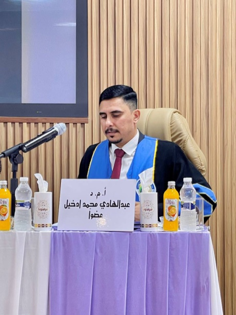

Abdul Hadi Alaidi is a lecturer in the Department of Electrical Engineering and Computer Science at Wasit University, where he has been a faculty member since 2014. He currently serves as a Chair Assistant in the Electrical department.
Previously, he worked as the Manager of the Computer Information Center at Wasit University and later as the IT Manager at the College of Engineering. He has developed a Student Record Information program in cooperation with Virginia Tech, sponsored by IREX.
Abdul Hadi completed his M.S. at Bridgeport University. His thesis explored a new hybrid method to solve mTSP. His research interests lie in the area of algorithms, ranging from theory to design and implementation.
Recent Publications
AI-based monkeypox detection model using Raspberry Pi 5 AI Kit
· AHM Alaidi, ZA Ramadhan, JS Alrubaye, HTHS ALRikabi, HA Mutar
Developing an advanced framework to recognize suspicious vehicles based on the Internet of Things applications using LOGO Net environment
· IA Aljazaery, SA Fattah, IS Nasir, HTHS ALRikabi, AHM Alaidi
A Two-Phase Clustering Framework for Adaptive Load Balancing in Vehicular Networks using OPTICS and K-Medoid algorithms
· MF Alomari, JS Alrubaye, AHM Alaidi, HTHS ALRikabi
Experience & Education
- 2007-06-01
Bachelor’s Degree in Computer Science
Science College, Mustansiriya University, Iraq
- 2014-05-10
Master’s Degree in Computer Science
Engineering College, Bridgeport University, USA
- 2014-06-12
Assistant Professor
Academic Title
- 2015-06-01 – 2016-03-31
Computer Center Director
Wasit University
- 2016-03-12
Lecturer
Academic Title
- 2017-06-01 – 2019-09-01
Electrical Department Coordinator
College of Engineering, Wasit University
- 2020-03-12
Associate Professor
Academic Title
- 2024-08-22
Doctorate (PhD) in Information Technology
Uniten, Malaysia
- 2025-02-17 – Present
Dean Assistant
Wasit University